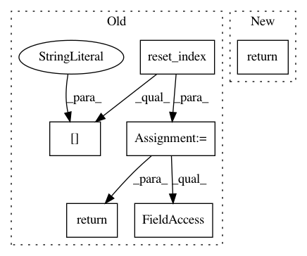

4a24e4e36ee175aef54b92eb03e08a2be7811a96,recordlinkage/datasets/febrl.py,,_febrl_links,#Any#,27
Before Change
def _febrl_links(df):
Get the links of a FEBRL dataset.
df_empty = df[[]].reset_index()
df_empty["key"] = df_empty["rec_id"].str. \
extract(r"rec-(\d+)", expand=True)[0]
// split the dataframe (org and dup)
org_bool = df_empty["rec_id"].str.endswith("org")
// merge the two frame and make MultiIndex.
pairs = df_empty[org_bool].merge(df_empty[~org_bool], on="key")
pairs_mi = pairs.set_index(["rec_id_x", "rec_id_y"]).index
pairs_mi.names = [None, None]
return pairs_mi
def load_febrl1(return_links=False):
Load the FEBRL 1 dataset.
After Change
)[["index_x", "index_y"]]
pairs_df = pairs_df[pairs_df["index_x"] > pairs_df["index_y"]]
return pandas.MultiIndex(
levels=[df.index.values, df.index.values],
labels=[pairs_df["index_x"].values, pairs_df["index_y"].values],
names=[None, None],
verify_integrity=False
)
def load_febrl1(return_links=False):
Load the FEBRL 1 dataset.
In pattern: SUPERPATTERN
Frequency: 3
Non-data size: 6
Instances
Project Name: J535D165/recordlinkage
Commit Name: 4a24e4e36ee175aef54b92eb03e08a2be7811a96
Time: 2018-03-10
Author: jonathandebruinhome@gmail.com
File Name: recordlinkage/datasets/febrl.py
Class Name:
Method Name: _febrl_links
Project Name: bashtage/linearmodels
Commit Name: cb4acd41252554266d539023be1456b7ac61abbd
Time: 2017-03-30
Author: kevin.k.sheppard@gmail.com
File Name: linearmodels/panel/data.py
Class Name: PanelData
Method Name: time_ids
Project Name: bashtage/linearmodels
Commit Name: cb4acd41252554266d539023be1456b7ac61abbd
Time: 2017-03-30
Author: kevin.k.sheppard@gmail.com
File Name: linearmodels/panel/data.py
Class Name: PanelData
Method Name: entity_ids